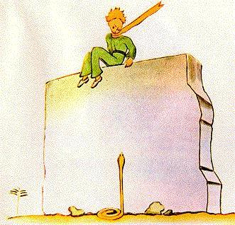
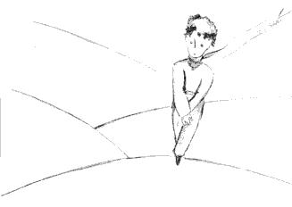
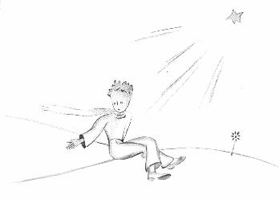
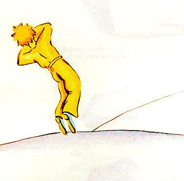

Al lado del pozo había un viejo muro de piedra en ruinas. Cuando volví de mi trabajo al día siguiente por la tarde, vi de lejos a mi principito sentado allá arriba, con las piernas colgando. Y oí que hablaba:
- Entonces no te acuerdas ? – decía. – No es exactamente acá !
Indudablemente le respondió otra voz, ya que replicó:
- Sí! Sí! efectivamente es el día, pero no es éste el lugar...
Continué caminando hacia el muro. Seguía sin ver ni oír a nadie. Sin embargo el principito replicó de nuevo:
- ... Desde luego. Verás dónde comienza mi huella en la arena. No tienes más que esperarme. Estaré allí esta noche.
Estaba a veinte metros del muro y seguía sin ver nada.
El principito siguió diciendo, después de un silencio:
- Tienes buen veneno ? Estás segura de no hacerme sufrir mucho tiempo ?
Me detuve con el corazón en un puño, pero seguía sin comprender.
- Ahora vete... – dijo –, me quiero bajar !
Entonces yo también bajé la mirada hacia el pie del muro, y pegué un salto ! Había allí, erguida hacia el principito, una de esas serpientes amarillas que lo ejecutan a uno en treinta segundos. Mientras hurgaba en el bolsillo para sacar mi revólver comencé a correr, pero con el ruido que hice la serpiente se dejó deslizar suavemente por la arena, como un chorro de agua que se extingue, y sin apurarse demasiado se escabulló entre las piedras con un leve sonido metálico. 
Llegué al muro justo a tiempo para recibir en los brazos a mi pequeño príncipe, pálido como la nieve.
- Qué historia es ésta ! Ahora hablas con las serpientes !
Le había aflojado su eterna bufanda dorada. Le había mojado las sienes y le había dado de beber. Y ahora no me atrevía a preguntarle más nada. Él me miró seriamente y me rodeó el cuello con sus brazos. Sentía latir su corazón como el de un ave que muere por un disparo de carabina. Me dijo:
- Me alegra que hayas encontrado lo que fallaba en tu máquina. Vas a poder regresar a tu casa...
- Cómo lo sabes !
Venía justamente a anunciarle que, contra toda esperanza, había logrado terminar mi trabajo !
No respondió a mi pregunta pero agregó:
- Hoy yo también regreso a mi casa.
Luego, melancólico:
- Es mucho más lejos... es mucho más difícil...
Yo sentía que estaba sucediendo algo extraordinario. Lo apreté entre mis brazos como un niño, y sin embargo me parecía que se deslizaba verticalmente hacia un abismo sin que pudiera hacer nada para retenerlo...
Tenía la mirada adusta, perdida muy lejos:
- Tengo tu cordero. Y tengo la caja para el cordero. Y tengo el bozal...
Y sonrió con melancolía.
Esperé largo rato. Sentía que se reanimaba poco a poco:
- Hombrecito, has tenido miedo...
Había tenido miedo, sin duda ! Pero rió dulcemente:
- Tendré mucho más miedo esta noche...
Nuevamente me sentí helado por el sentimiento de lo irreparable. Y comprendí que no soportaba la idea de no oír nunca más esa risa, que era para mí como una fuente en el desierto.
- Hombrecito, quiero seguir escuchando tu risa...
Pero él me dijo:
- Esta noche se cumplirá un año. Mi estrella se encontrará justo encima del lugar donde caí el año pasado...
- Hombrecito, dime que esa historia de serpiente y de cita y de estrella es un mal sueño...
Pero no me respondió. Me dijo:
- Lo que es importante, no se puede ver...
- Desde luego...
- Es como con la flor. Si amas a una flor que está en una estrella, es placentero mirar el cielo por la noche. Todas las estrellas están floridas.
- Desde luego...
- Es como con el agua. La que me diste a beber era como una música, a causa de la polea y de la cuerda... recuerdas... era deliciosa.
- Desde luego...
- Por la noche mirarás las estrellas. La mía es demasiado pequeña para que te muestre dónde se encuentra. Es mejor así. Mi estrella será para ti una de las tantas estrellas. Entonces, te gustará mirar a todas las estrellas. Todas serán tus amigas. Y además voy a hacerte un regalo...
Volvió a reír.
- Ah! hombrecito, hombrecito, me gusta escuchar esa risa !
- Justamente ése será mi regalo... será como con el agua...
- Qué quieres decir ?
- La gente tiene estrellas que no son las mismas. Para quienes viajan, las estrellas son guías. Para otros no son más que pequeñas luces. Para otros que son sabios, ellas son problemas. Para mi hombre de negocios significaban oro. Pero todas esas estrellas son mudas. Tú tendrás estrellas como no tiene nadie...
- Qué quieres decir ?
- Cuando mires el cielo por la noche, dado que yo estaré en una de ellas, dado que yo reiré en una de ellas, entonces será para ti como si rieran todas las estrellas. Tú tendrás estrellas que saben reír !
Y volvió a reír.
- Y cuando te hayas consolado (siempre se encuentra consuelo) estarás contento de haberme conocido. Serás siempre mi amigo. Tendrás ganas de reír conmigo. Y abrirás de vez en cuando tu ventana, así, por placer... Y tus amigos se sorprenderán de verte reír al mirar el cielo. Entonces les dirás: "Sí, las estrellas siempre me hacen reír !" Y ellos te creerán loco. Te habré jugado una muy mala pasada...
Y volvió a reír.
- Será como si te hubiese dado, en vez de estrellas, montones de pequeños cascabeles que saben reír...
Y volvió a reír. Después volvió a ponerse serio:
- Esta noche... sabes... mejor no vengas.
- No te abandonaré.
- Podrá parecer que sufro... podrá parecer que me muero. Es eso. No lo vengas a ver, no vale la pena.
- No te abandonaré.
Pero se lo notaba preocupado.
- Te lo digo... es también por la serpiente, que no debe morderte... Las serpientes son malas, pueden morder por placer.
- No te abandonaré.
Pero algo lo tranquilizó:

- Es cierto que no tienen más veneno para la segunda picadura...
Aquella noche no lo vi marcharse. Se había escapado silenciosamente. Cuando logré alcanzarlo caminaba decidido, con paso rápido. Sólo me dijo:
- Ah! estás aquí...
Y me tomó de la mano. Pero siguió mortificándose:
- Has hecho mal; vas a sufrir. Parecerá que me muero y no será cierto...
Yo no decía nada.
- Tú comprendes. Es demasiado lejos. No puedo llevarme este cuerpo, es demasiado pesado.
Yo no decía nada.
- Pero será como una vieja cáscara abandonada. No tienen
nada de triste las cáscaras abandonadas...

Yo no decía nada.
Se desanimó un poco. Pero hizo aún un esfuerzo:
- Será simpático, sabes. Yo también miraré las estrellas. Todas las estrellas serán pozos con una polea oxidada. Todas las estrellas me darán de beber...
Yo no decía nada.
- Será tan divertido ! Tú tendrás quinientos millones de cascabeles, yo tendré quinientos millones de fuentes...
Y se calló también, porque estaba llorando...

- Es ahí. Déjame que dé un paso yo solo.
Y se sentó porque tenía miedo.
Agregó:
- Tú sabes... mi flor... soy responsable de ella ! Y es tan débil ! Y es tan ingenua. Tiene cuatro espinas insignificantes para protegerse del mundo...
Yo me senté porque ya no podía mantenerme parado. Dijo:
- Bueno... es todo...
Vaciló todavía un poco, luego se levantó. Dio un paso. Yo no podía moverme.
No hubo más que un relámpago amarillo cerca de su tobillo. Permaneció un instante inmóvil. No gritó. Cayó suavemente como cae un árbol. Ni siquiera hizo ruido, a causa de la arena.
| Chapitre XXV | |
Capítulo XXV |
| Chapitre XXVI | Índice | |
| Fin | Fin |